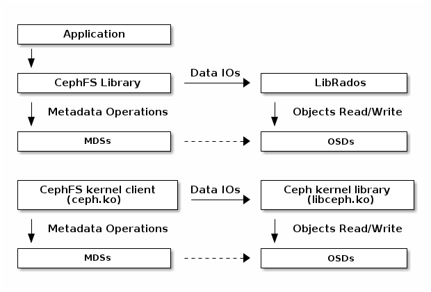

Notice
This document is for a development version of Ceph.
Ceph File System IO Path
All file data in CephFS is stored as RADOS objects. CephFS clients can directly access RADOS to operate on file data. MDS only handles metadata operations.
To read/write a CephFS file, client needs to have ‘file read/write’ capabilities for corresponding inode. If client does not have required capabilities, it sends a ‘cap message’ to MDS, telling MDS what it wants. MDS will issue capabilities to client when it is possible. Once client has ‘file read/write’ capabilities, it can directly access RADOS to read/write file data. File data are stored as RADOS objects in the form of <inode number>.<object index>. See ‘Data Striping’ section of Architecture for more information. If the file is only opened by one client, MDS also issues ‘file cache/buffer’ capabilities to the only client. The ‘file cache’ capability means that file read can be satisfied by client cache. The ‘file buffer’ capability means that file write can be buffered in client cache.

Brought to you by the Ceph Foundation
The Ceph Documentation is a community resource funded and hosted by the non-profit Ceph Foundation. If you would like to support this and our other efforts, please consider joining now.